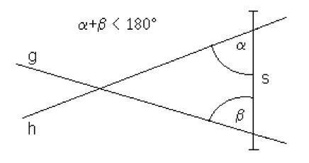
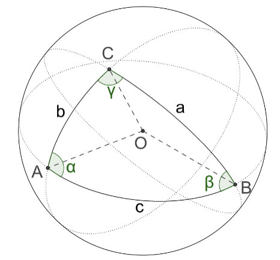
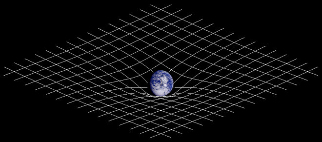

11 La géométrie non euclidienne

5
La géométrie euclidienne, celle que vous connaissez, repose sur cinq axiomes et cinq postulats. Citons le cinquième postulat : “Si une droite, tombant sur deux droites, fait les angles intérieurs du même côté plus petits que deux angles droits, ces droites, prolongées à l’infini, se rencontreront du côté où les angles sont plus petits que deux angles droits”. Ils permettent d’en déduire des propriétés bien connues, comme par exemple : la somme des angles d’un triangle vaut 180 °.
Durant des siècles, les mathématiciens ont essayé de prouver que le cinquième postulat n’était pas nécessaire pour construire la géométrie euclidienne, sans succès. Nous comprendrons plus tard qu’il n’est pas possible de s’en séparer. Mais si nous l’enlevons, nous pouvons obtenir des nouvelles géométries, appelées “géométries non euclidienne”. Les plus connues sont la géométrie sphérique et la géométrie hyperbolique.

6
Dans la géométrie sphérique, nous étudions les objets géométriques dans une sphère. Sur la figure ci-dessus, vous pouvez voir un triangle en géométrie sphérique. Ici, la somme des angles un triangle est supérieure à 180°. Cette géométrie est utilisée entre autres dans la cartographie.

7
Dans la géométrie hyperbolique, nous étudions les objets géométriques dans un hyperboloïde. Cette fois, la somme des angles d’un triangle sera inférieure à 180°. Nous utilisons cette géométrie notamment dans l’astronomie. Une planète, avec sa masse, va courber l’espace-temps et lui donner la forme d’un hyperboloïde. Si un objet passe à proximité ce cette planète, sa trajectoire sera donc courbée.
Dans ce TM, nous vous proposons d’étudier l’une des deux géométries et de l’appliquer à un cas concret, ou de comparer la géométrie euclidienne et une géométrie non euclidienne.
Carla Bastos Da Silva
Ahmed Bufardi
Yannick Donnet
Frédéric Makiadi
Alan Morier
Par Phrontis — Travail personnel, CC BY 3.0, https://commons.wikimedia.org/w/index.php?curid=7618684↩︎
Par HB — Travail personnel, CC BY-SA 4.0, https://commons.wikimedia.org/w/index.php?curid=71758828↩︎
Source : Par Johnstone sur Wikipédia anglaisTexte original : Created by User Johnstone using a 3D CAD software package and an image of planet earth from NASA's Galileo spacecraft. — Travail personnel, CC BY-SA 3.0, https://commons.wikimedia.org/w/index.php?c↩︎